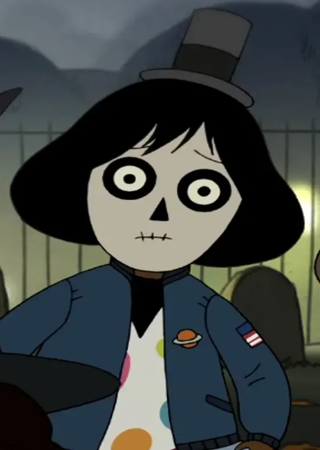
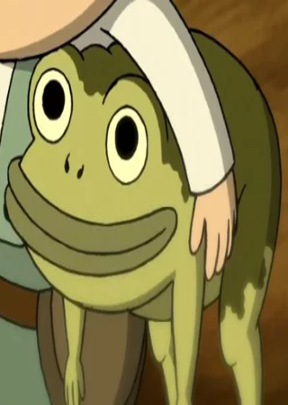
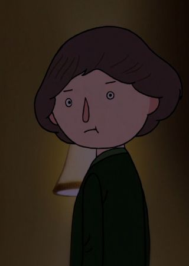

Amigos de la Ciudad
En esta pagina se presentaran a personajes que Wirt y Greg conocian antes de encontrarse en el bosque; si se desea
saber que ocurre a cada uno en el transcurso de la serie dirijase a la pagina "Episodios".
Sara

Una amiga de Wirt y la chica que le gusta.
Trabaja como mascota del equipo de futbol americano de su escuela con un disfraz de abeja, pero pasa la mayor parte
los episodios en los que aparece en su disfraz de payaso para Halloween. A pesar de los nervios de Wirt, ella parece estar
interesada en él
Su voz pertenece a la actriz de doblaje Andrea Orozco en Hispanoamerica, y a Belén Rodríguez en España.
La Rana
Una rana que Greg encontro antes de llegar al bosque, aún no decidio su nombre asi que tiene uno nuevo cada episodio.
Comienza la serie comportandose como una rana comun y corriente, pero durante el transcurso de la serie comienza a demostrar rasgos
mas propios de los habitantes del bosque, como el caminar sobre sus patas traseras e incluso hablar.
Su voz pertenece al actor de doblaje Dan Osorio en Hispanoamerica, y a José Escoboso en España.

Jason Funderberker

Un amigo de Sara y rival de Wirt.
Al igual que Wirt, Jason esta enamorado de Sara; pero, a diferencia de Wirt, Jason esta convencido de que Sara preferiria salir con
él antes que con Wirt, y no para de intentar invitarla a salir durante todo Halloween.
Su voz pertenece al actor de doblaje Abraham Vega en Hispanoamerica.